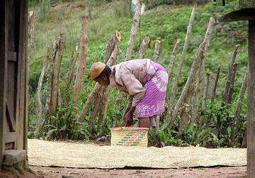

Zambian children's games
Zambia · Street and playground games

Zande kundi arched harp
South Sudan · Musical instruments
Zarzir
Palestine · Dexterity and skill games
Ziziros
Cyprus · Street and playground games
Zulu beadwork letters
South Africa · Crafts and makingPlay preview · in the Paper & Paint of the World app